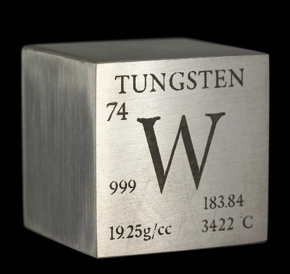

El descubrmiento del wolframio (¿o es tungsteno?)
Actualmente se conocen más de un centenar de elementos químicos que componen la materia del universo. El descubrimiento de los mismos ha sido una tarea ardua, que ha ocupado a los estudiosos de la materia desde la antigüedad hasta el pasado siglo XX. Uno de ellos, el wolframio, se descubrió en 1783 en una localidad vasca, Bergara. Los descubridores fueron los hermanos Fausto y Juan José Elhuyar. Aunque podemos pensar que este hecho es suficientemente conocido, lo cierto es que en ocasiones se hace referencia al mismo como un acontecimiento puntual y aislado, casi como una casualidad. Pero un logro de este nivel fue mas bien producto, como tantos otros, de la combinación de buenas instalaciones, un ambiente intelectual favorable, investigadores bien formados y contactos internacionales. Recordemos brevemente algunos hechos relacionados con todo ello.
A finales del siglo XVIII se produjo en toda Europa un enorme interés por el estudio de las ciencias puras y sus aplicaciones. En ese contexto surge la química moderna, ciencia que estudia los elementos que componen la materia, sus propiedades y sus interacciones. Gracias a Lavoisier y otros científicos, el estudio de la materia se dota de precisión y método científico y comienzan a quedar atrás, definitivamente, teorías como la del flogisto, basada en las ideas de la alquimia y en la creencia de que la materia se compone de cuatro elementos básicos –fuego, tierra, agua y aire– y de las diferentes mezclas de éstos.
Entre los pioneros de la química moderna destacan algunos personajes suecos, como Carl Wilhelm Scheele y Torbern Oloff Bergman. El primero fue uno de los mejores químicos del siglo XVIII, contribuyendo significativamente a poner a Suecia a la vanguardia de la ciencia química y, principalmente, de la mineralógica de la época. Bergmann destacó en mineralogía química y debe calificársele como pionero en la clasificación de los minerales según la composición química de éstos. Estos químicos suecos trabajaban hacia 1780 con un mineral, “tungsten” (conocido hoy como Scheelita, CaWO4) del que esperaban aislar un nuevo elemento químico. Y uno de nuestros protagonistas, Juan José Elhuyar tuvo conocimiento de ello, durante su estancia de varios meses en Upsala, donde asistió al curso de “alta química” que proporcionaba Bergmann.

En esa misma época, en Bergara, la Real Sociedad Bascongada de Amigos del país había puesto en marcha ya el laboratorio de química, imprescindible para las cátedras de “Química y Metalurgia” y «Mineralogía y Ciencias Subterráneas” que constituían la base de su innovador proyecto. Otro de los pioneros de la química, el francés Louis Joseph Proust, fue el encargado de preparar ese “perfecto laboratorio”, excelentemente equipado con instrumental puntero y con hornos capaces de alcanzar muy altas temperaturas. Así lo reconoció años más tarde el químico sueco Nicolas Thumborg (1747-1795) quién llegó a Bergara en 1788: “Laboratorium Chemicum… es un edificio aparte muy grande y bastante bien instalado. Instrumentos y material precioso no faltan. Cuando me hicieron el inventario me quedé grandemente sorprendido, pues no habiendo visto más que los laboratorios de Upsala y Estocolmo, me atrevo a decir que aquellos no son más que una cuarta parte en comparación con este.”
Volviendo al momento del descubrimiento, una vez reunidos en Bergara los hermanos Elhuyar en mayo de 1783, se pusieron a trabajar en el método para aislar el posible nuevo elemento que también perseguían los suecos. En su caso, el punto de partida fue otro mineral, la Wolframita, (Fe,Mn)WO4), procedente de las minas de estaño ubicadas en Zinnualde, en la frontera de Sajonia y Bohemia. Finalmente, el 28 de septiembre de 1783 consiguieron aislar el nuevo elemento, al que llamaron “Volfram”: “Lo llamaremos volfram, tomando el nombre del material del que ha sido extraído.»
El proceso químico general seguido por los hermanos Elhuyar para el aislamiento del wolframio fue el siguiente:
Moler la wolframita
(Fe, Mn) WO4 + 2HCl → H2WO4 + (Fe, Mn) WO4
H2WO4 + Calor → WO3 + H2O
WO3 + 3C → W + 3CO
El Wolframio se descubre cuando aún sólo eran conocidos 24 elementos químicos y ese hecho tuvo, lógicamente, repercusión en los ámbitos científicos de la época. La primera comunicación escrita se hizo en la publicación periódica de la Bascongada, los “Extractos de las Juntas Generales…”, con el título siguiente: Análisis químico del volfram y examen de un nuevo metal que entra en su composición”,. Más tarde se publicó en Francia, “Mémoire presenté à l’Académie Royale des Sciences, Inscriptions et Belles Lettres de Toulouse, en 1784, Sur la nature du Volfram, et celle d’un nouveau métal qui entre dans sa composition”. Y en 1785 en Londres, “A Chemical Analysis of Wolfram and examination of a new metal which enters into its composition by Don Joseph and Fausto de Luyart”.
La palabra Wolfram procede delalemán wolfram o wolfarth, baba o espuma de lobo. Los descubridores dejaron claro el nombre que debía darse al nuevo elemento, aunque hoy en día parece olvidarse aquello, imponiéndose muchas veces el nombre de tungsteno o “piedra pesada”.
En la exposición permanente del museo Laboratorium puedes observar tanto wolframio en polvo como muestras de Wolframita, mineral procedente de las minas de de Zinnualde similar al que utilizarían los hermanos Elhuyar. En el museo puedes también repetir el proceso que realizaron los Elhuyar para aislar el wolframio, mediante un interactivo instalado en la exposición permanente. Fausto Elhuyar te espera allí, para guiarte en tu descubrimiento.
Autor: Equipo técnico del museo Laboratorium
Museo Laboratorium. Palacio Errekalde, Juan Irazabal s/n, 20570 Bergara